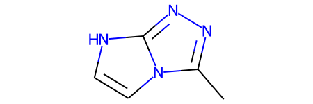

import os
import pandas as pd
import numpy as np
import tqdm.notebook as tqdm# RDkit imports
import rdkit
from rdkit import Chem
from rdkit.Chem import Draw
from rdkit.Chem.Draw import IPythonConsole #Needed to show molecules
print(rdkit.__version__)
Chem.WrapLogs()
lg = rdkit.RDLogger.logger()
lg.setLevel(rdkit.RDLogger.CRITICAL)2021.09.2qm9_data_csv = pd.read_csv(os.path.join('small_molecule_data/qm9.csv'))qm9_data_csv.head(3)| smiles | mu | alpha | homo | lumo | gap | r2 | zpve | cv | u0 | u298 | h298 | g298 | |
|---|---|---|---|---|---|---|---|---|---|---|---|---|---|
| 0 | C | 0.0000 | 13.21 | -0.3877 | 0.1171 | 0.5048 | 35.3641 | 0.044749 | 6.469 | -40.478930 | -40.476062 | -40.475117 | -40.498597 |
| 1 | N | 1.6256 | 9.46 | -0.2570 | 0.0829 | 0.3399 | 26.1563 | 0.034358 | 6.316 | -56.525887 | -56.523026 | -56.522082 | -56.544961 |
| 2 | O | 1.8511 | 6.31 | -0.2928 | 0.0687 | 0.3615 | 19.0002 | 0.021375 | 6.002 | -76.404702 | -76.401867 | -76.400922 | -76.422349 |
qm9_data_csv.shape(133885, 13)The QM9 dataset from the MoleculeNet: A Benchmark for Molecular Machine Learning paper, consisting of about 130,000 molecules with multiple regression targets.
Each molecule includes complete spatial information for the single low energy conformation of the atoms in the molecule.
More information on each descriptor here
mol_temp = qm9_data_csv.iloc[125559]mol_tempsmiles Cc1nnc2n1cc[nH]2
mu 5.8215
alpha 72.81
homo -0.2062
lumo 0.0085
gap 0.2147
r2 995.2925
zpve 0.115329
cv 27.504
u0 -413.018354
u298 -413.011142
h298 -413.010198
g298 -413.049831
Name: 125559, dtype: objectmol_obj = Chem.MolFromSmiles(mol_temp['smiles'])
mol_obj
# To output x y z of the molecule
print(Chem.MolToMolBlock(mol_obj))
RDKit 2D
9 10 0 0 0 0 0 0 0 0999 V2000
1.6078 3.5952 0.0000 C 0 0 0 0 0 0 0 0 0 0 0 0
0.3943 2.7135 0.0000 C 0 0 0 0 0 0 0 0 0 0 0 0
-1.0323 3.1771 0.0000 N 0 0 0 0 0 0 0 0 0 0 0 0
-1.9140 1.9635 0.0000 N 0 0 0 0 0 0 0 0 0 0 0 0
-1.0323 0.7500 0.0000 C 0 0 0 0 0 0 0 0 0 0 0 0
0.3943 1.2135 0.0000 N 0 0 0 0 0 0 0 0 0 0 0 0
1.2760 0.0000 0.0000 C 0 0 0 0 0 0 0 0 0 0 0 0
0.3943 -1.2135 0.0000 C 0 0 0 0 0 0 0 0 0 0 0 0
-1.0323 -0.7500 0.0000 N 0 0 0 0 0 0 0 0 0 0 0 0
1 2 1 0
2 3 2 0
3 4 1 0
4 5 2 0
5 6 1 0
6 7 1 0
7 8 2 0
8 9 1 0
6 2 1 0
9 5 1 0
M END
Take a small sample from QM9 dataset
QM9_df_smol = qm9_data_csv.sample(10).reset_index(drop=True)QM9_df_smol.head(2)| smiles | mu | alpha | homo | lumo | gap | r2 | zpve | cv | u0 | u298 | h298 | g298 | |
|---|---|---|---|---|---|---|---|---|---|---|---|---|---|
| 0 | CC(C#C)C1CNC1=O | 3.8673 | 78.47 | -0.2445 | 0.0327 | 0.2772 | 1256.9197 | 0.145972 | 34.328 | -401.936628 | -401.927155 | -401.926211 | -401.971364 |
| 1 | NC1=NC2CC2O1 | 1.5272 | 54.01 | -0.2181 | 0.0534 | 0.2715 | 615.3852 | 0.104048 | 22.139 | -340.637231 | -340.631628 | -340.630684 | -340.666236 |
QM9_df_smol.shape(10, 13)PandasTools module helps add mol molecule objects from RDKit as per the SMILES in the dataframe
from rdkit.Chem import PandasToolsPandasTools.AddMoleculeColumnToFrame(QM9_df_smol, smilesCol='smiles')Check the new ROMol columns being appended in the dataframe
QM9_df_smol.columnsIndex(['smiles', 'mu', 'alpha', 'homo', 'lumo', 'gap', 'r2', 'zpve', 'cv',
'u0', 'u298', 'h298', 'g298', 'ROMol'],
dtype='object')QM9_df_smol['ROMol'][0]
Visualize the dataframe, add properties of interest at the bottom, you can add index too if need
PandasTools.FrameToGridImage(QM9_df_smol, legendsCol='gap', molsPerRow=3, subImgSize=(200,200))
Fingerprints
Compress molecules into vectors for mathetical operations and comparisons. First we will look at MorganFingerprint method. For this method we have to define the radius and the size of the vector being used. More information on Morgan Fingerprints can be read at this blogpost
- Nice Review on this matter from Peter Willet
- Presentation by Gregory Landrum (creator of RDkit) on Fingerprints
- Official Documentation on Fingerprints in RDkit
# Fingerprints
from rdkit.Chem import AllChem_radius = 2
_nBits = 2 ** 10
ECFP6 = [AllChem.GetMorganFingerprint(m, radius) for m in QM9_df_smol['ROMol']]len(ECFP6)Types of fingerprints to consider:
Descriptor based fingerprints - more information here
Count or binary-based fingerprints
2.1. Circular Fingerprints (Morgan) - Extended Connectivity (ECFP)
2.2. Atom pair
2.3. Torsion
2.4. MACCS Keys
2.5. RDkit
Data-driven fingerprints
fps1 = [Chem.RDKFingerprint(x, fpSize=1024, minPath=1, maxPath=4) for x in suppl]
fps2 = [Chem.GetHashedMorganFingerprint(x, radius=2, nBits=1024) for x in suppl]
fps3 = [Chem.GetMorganFingerprint(x, radius=2, useCounts= True) for x in suppl]
fps4 = [Pairs.GetAtomPairFingerprintAsIntVect(x) for x in suppl]
arr = np.zeros((4,1024), dtype = np.int8)
for i in range(0,len(suppl)):
DataStructs.ConvertToNumpyArray(fps2[i], arr[i])
print(arr)2. Count or binary fingerprint
from rdkit.Chem import AllChemfp = AllChem.GetMorganFingerprintAsBitVect(mol_obj, _radius, nBits= _nBits)
fp_array = [int(x) for x in fp.ToBitString()]Pairs.GetHashedAtomPairFingerprint GetMorganFingerprintAsBitVect GetHashedMorganFingerprint
from rdkit.Chem.AtomPairs import Pairs, Torsions
fpvect1 = Pairs.GetHashedAtomPairFingerprint(mol_obj)
fpvect2 = Pairs.GetAtomPairFingerprint(mol_obj)
fp1 = np.zeros((1,))
fp2 = np.zeros((1,))
#DataStructs.ConvertToNumpyArray(fp_vect, fp)
#print(type(fp))DataStructs.ConvertToNumpyArray(fpvect1, fp1) DataStructs.ConvertToNumpyArray(fpvect2, fp2) fp1.shapefp2.shapefrom rdkit.Chem.AtomPairs import Pairs, Torsions
from rdkit import Chem, DataStructs
fpvect1 = AllChem.GetHashedMorganFingerprint(mol_obj, 2, nBits= 1024)
fpvect2 = AllChem.GetMorganFingerprint(mol_obj, 2)
fp1 = np.zeros((1,))
fp2 = np.zeros((1,))
DataStructs.ConvertToNumpyArray(fpvect1, fp1)
DataStructs.ConvertToNumpyArray(fpvect2, fp2) from rdkit import Chem, DataStructs
from rdkit.Chem import MACCSkeys
from rdkit.Chem.AtomPairs import Pairs, Torsions
def get_fingerprint(smiles: str, radius: int = 2, num_bits: int = 2048, use_counts: bool = False, type_fp: str = 'Morgan') -> np.ndarray:
"""
Generates a morgan fingerprint for a smiles string.
:param smiles: A smiles string for a molecule.
:param radius: The radius of the fingerprint.
:param num_bits: The number of bits to use in the fingerprint.
:param use_counts: Whether to use counts or just a bit vector for the fingerprint
:return: A 1-D numpy array containing the morgan fingerprint.
"""
if type(smiles) == str:
mol = Chem.MolFromSmiles(smiles)
else:
mol = smiles
if type_fp == 'Morgan':
if use_counts:
fp_vect = AllChem.GetHashedMorganFingerprint(mol, radius, nBits=num_bits)
else:
fp_vect = AllChem.GetMorganFingerprintAsBitVect(mol, radius, nBits=num_bits)
if type_fp == 'MACCS':
fp_vect = MACCSkeys.GenMACCSKeys(mol)
if type_fp == 'RDkit':
Chem.RDKFingerprint(x)
fp = np.zeros((1,))
DataStructs.ConvertToNumpyArray(fp_vect, fp)
return fpSimilarity
RDKit provides tools for different kinds of similarity search, including Tanimoto, Dice, Cosine, Sokal, Russel… and more. Tanimoto is a very widely use similarity search metric because it incorporates substructure matching. Here is an example
ref_mol = QM9_df_smol.iloc[3]['ROMol']ref_mol# Generate finger print based representation for that molecule
ref_ECFP4_fps = AllChem.GetMorganFingerprintAsBitVect(ref_mol, radius= _radius, nBits=_nBits)QM9_smol_ECFP4_fps = [AllChem.GetMorganFingerprintAsBitVect(x, _radius, _nBits) for x in QM9_df_smol['ROMol']]from rdkit import DataStructs
similarity_efcp4 = [DataStructs.FingerprintSimilarity(ref_ECFP4_fps, x) for x in QM9_smol_ECFP4_fps]QM9_df_smol = QM9_df_smol.sort_values(['Tanimoto_Similarity (ECFP4)'], ascending=False)
PandasTools.FrameToGridImage(QM9_df_smol, legendsCol="Tanimoto_Similarity (ECFP4)", molsPerRow=4)